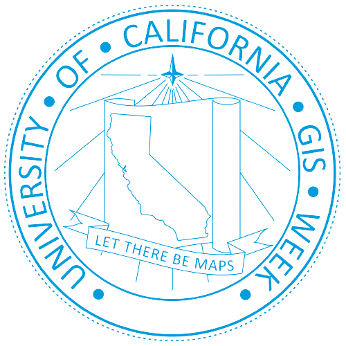

🎉 Welcome to the UC San Diego Library Mapathon 2023! 🎉
To support the Missing Maps project to map vulnerable areas before disaster or crisis strikes to reduce risk and speed recovery efforts,
we'll work together to trace buildings and infrastructures from satellite images
Explore the resources below to get started 📍
Before you start
Be sure to create an OpenStreetMap (OSM) account and create an HOTOSM account
Quick Start Tutorial Slides
Easy-to-follow steps to submit a task and use hashtags for leaderboard

Quick Start Guide Document
Get started on publishing your first map!
OSM Video
How to use the task manager

HOT OSM Quick Start Guide
How to create account and submit task
Background image from unsplash. Icons from flaticon.